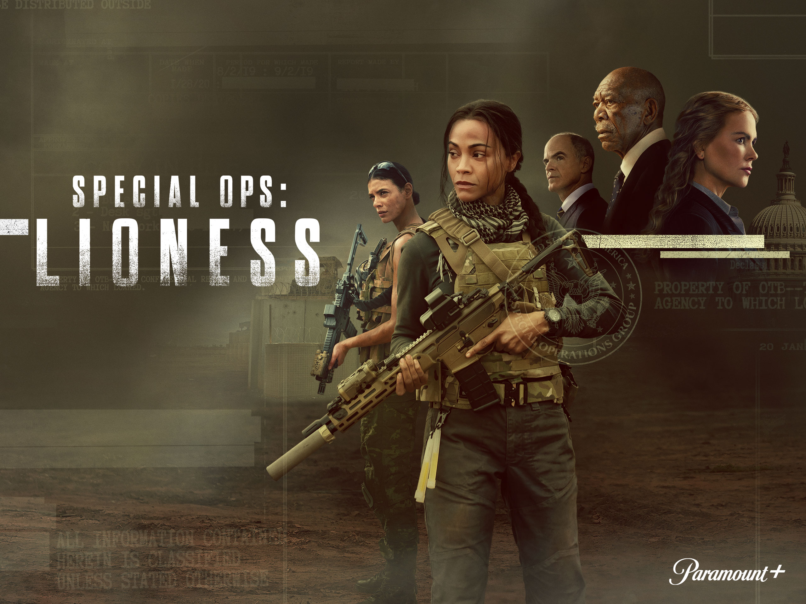

Lioness, também conhecida como Special Ops: Lioness, é uma série de televisão americana de suspense de espionagem criada por Taylor Sheridan que estreou em 23 de julho de 2023, na Paramount+.
Em maio de 2024, a série foi renovada para uma segunda temporada.

Banner de divulgação da série, com alguns dos personagens principais.
Sinopse
Force Recon Marine Cruz Manuelos é recrutado para o programa Lioness da CIA e encarregada de fazer amizade com a filha de um financiador do terrorismo.
Elenco
Em fevereiro de 2022, Zoe Saldaña foi escalada para estrelar a série,
e ingressou como produtora executiva ao lado de Nicole Kidman. No mês seguinte,
Laysla de Oliveira entrou para o elenco. Em junho, Sheridan assumiu como showrunner
da série de Thomas Brady após a conclusão da sala dos roteiristas do programa. O elenco continuou em setembro, com as adições de Dave Annable, LaMonica Garrett,
James Jordan, Austin Hébert, Jonah Wharton e Hannah Love Lanier. Em janeiro de 2023, Kidman e Michael Kelly
se juntaram ao elenco ao lado de Morgan Freeman.
Em 9 de maio de 2024, foi relatado que os membros do elenco que retornaram para a segunda temporada incluem Zoe Saldaña, Laysla De Oliveira, Michael Kelly e Nicole Kidman,
com Morgan Freeman sendo promovido a um papel regular na série. Após a oficialização da renovação na mesma data, De Oliveira expressou seu entusiasmo em retornar ao papel de Cruz em sua conta do Instagram.
Em 17 de maio de 2024, foi anunciado que Thad Luckinbill foi promovido como regular da série para a segunda temporada. Poucos dias depois, Genesis Rodriguez se juntou ao elenco em caráter não revelado para a segunda temporada.